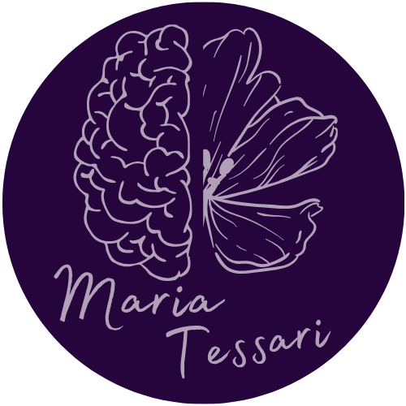
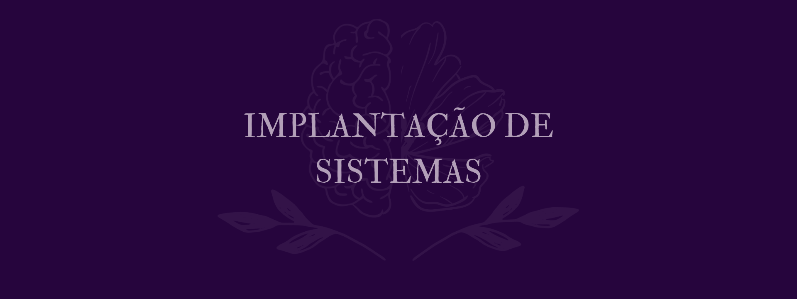

Não informadas.
Durante os dias 05/11 e 06/11 a Escola SESI de Florianópolis participou de um Hackathon, enquanto acontecia o Mundo SENAI. Esse Hackathon envolvia um programa da NSC TV: o Tech SC, que acontece todos os sábados às 08:30 da manhã. Cada unidade da Escola SESI recebeu um desafio, e o nosso era "Como conectar os interesses dos jovens às marcas e empresas que poderiam patrocinar conteúdos de tecnologia e inovação na televisão?". Com isso, toda manhã assistíamos lives de mentoria, em que os responsáveis explicavam quais seriam as entregas do dia, horário e tiravam dúvidas, logo após isso os professores se disponibilizavam para nos auxiliar. Então começamos o desenvolvimento do nosso projeto, a ideia era fazer uma espécie de Hackathon, em que as empresas patrocinadoras iriam propor desafios reais para que os jovens pudessem solucionar. A ideia era que os jovens se sentissem atraídos por esses desafios, uma vez que eles poderiam passar na NSC, ganhariam certificados e experiências para entrar no mercado de trabalho. Por vez, as empresas estariam interessadas em patrocinar pois teriam seus problemas solucionados (e o patrocínio tem três níveis a serem escolhidos), além disso as próprias empresas com seus desafios, assim como o programa, seriam divulgados em intervalos comerciais e vídeos curtos na internet. Foi um projeto muito interessante de construir, pois tínhamos que pensar em como conectar os jovens e os patrocinadores de uma forma que beneficiasse a todos. Foi um tanto desafiador também, mas foi algo que agregou muito na nossa experiência profissional, e obtivemos um ótimo resultado: fomos classificados para o Top 5 melhores da escola, e depois o nosso projeto foi o vencedor da nossa unidade! Essa foi uma grande conquista e ficamos muito felizes.
Acessar Site Acessar Repositório no GitHub Acessar Vídeo